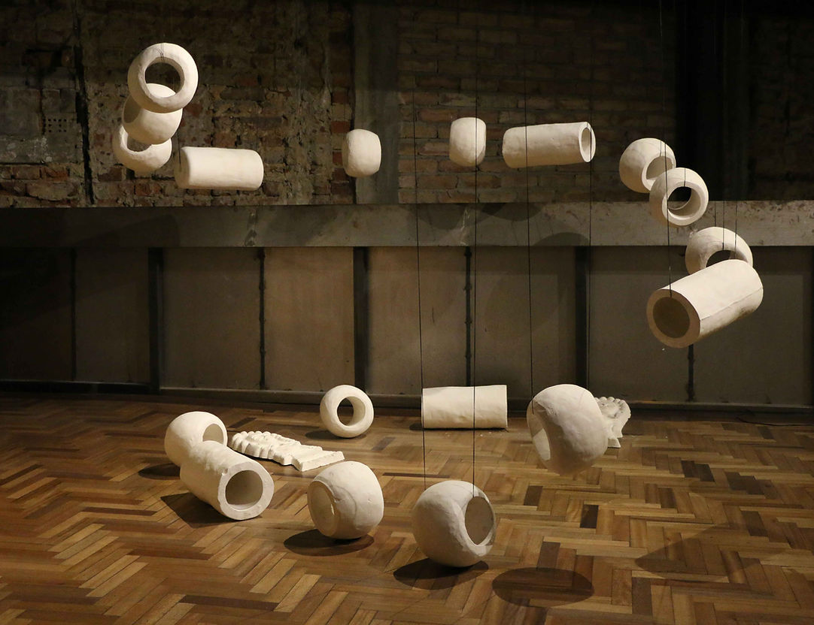
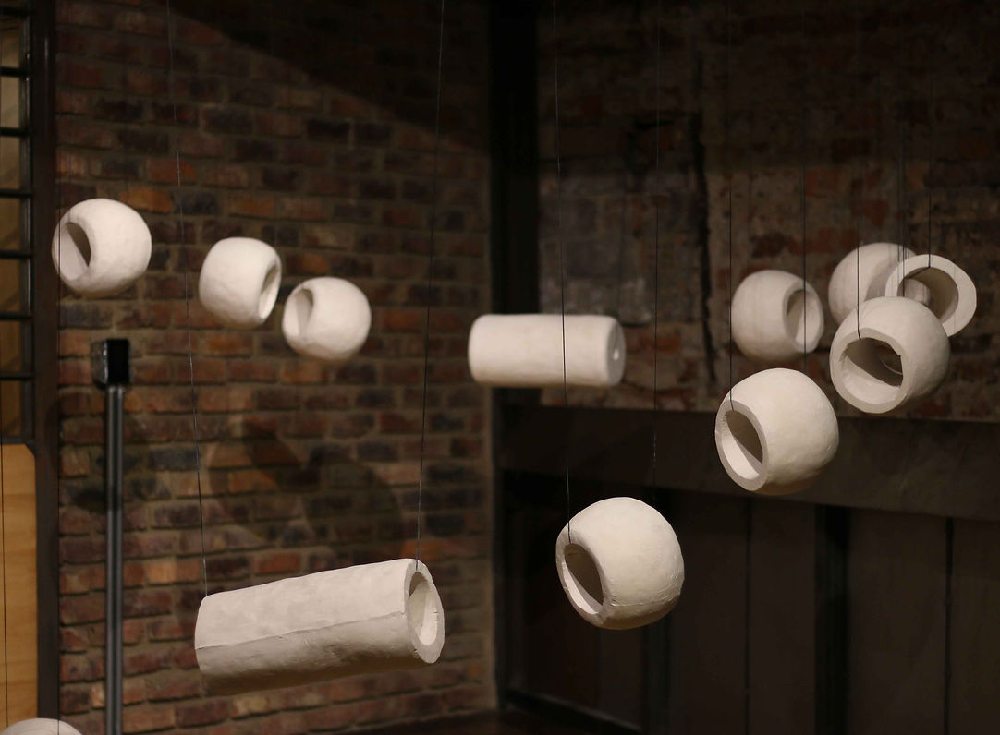
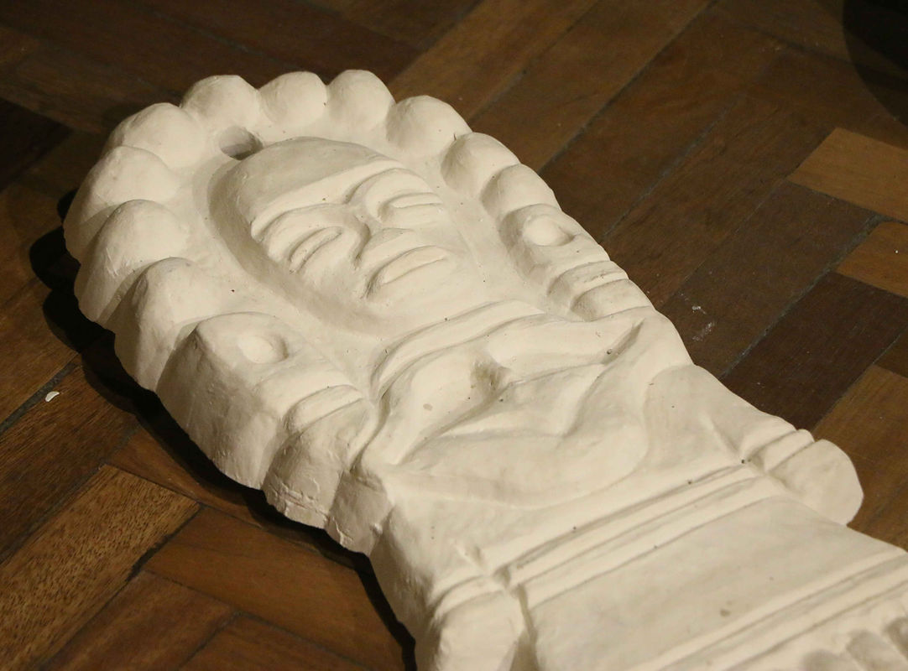
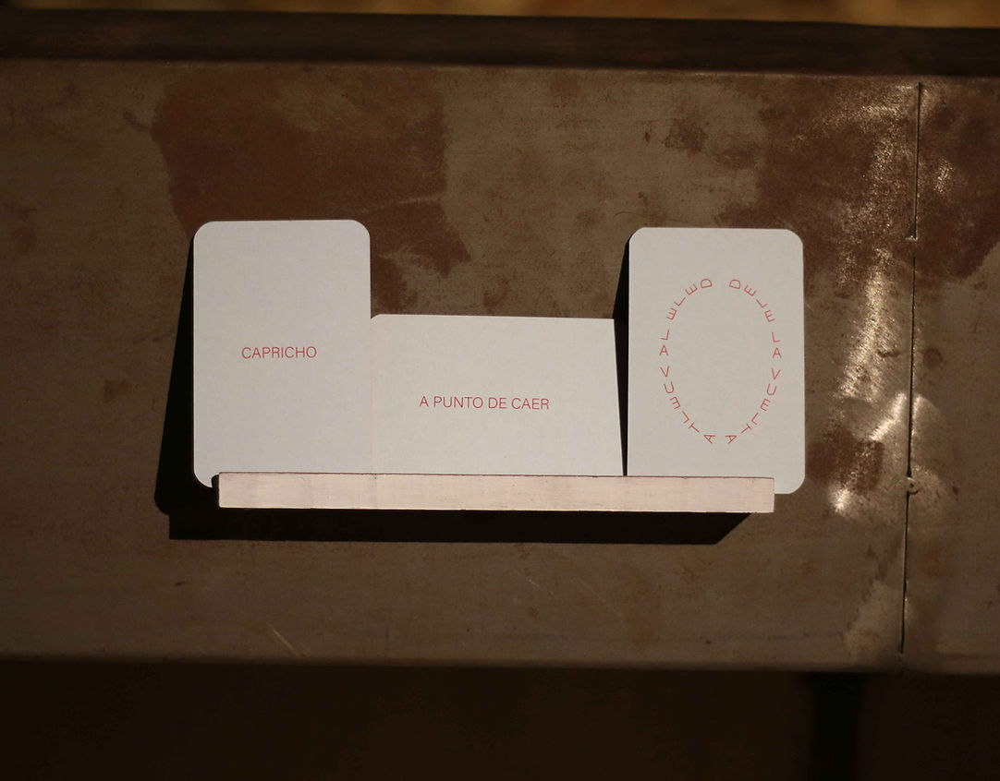
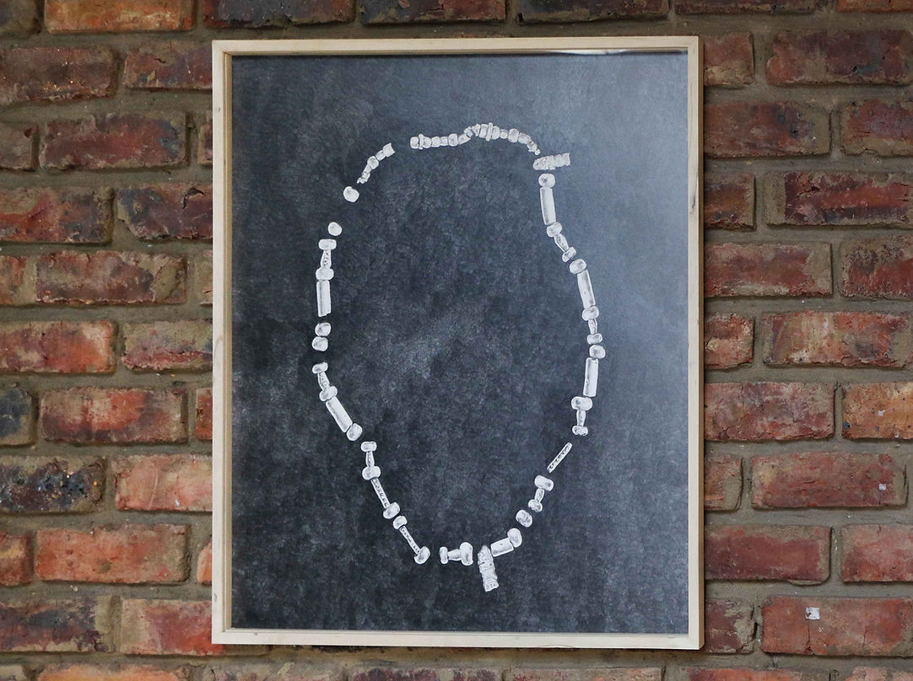
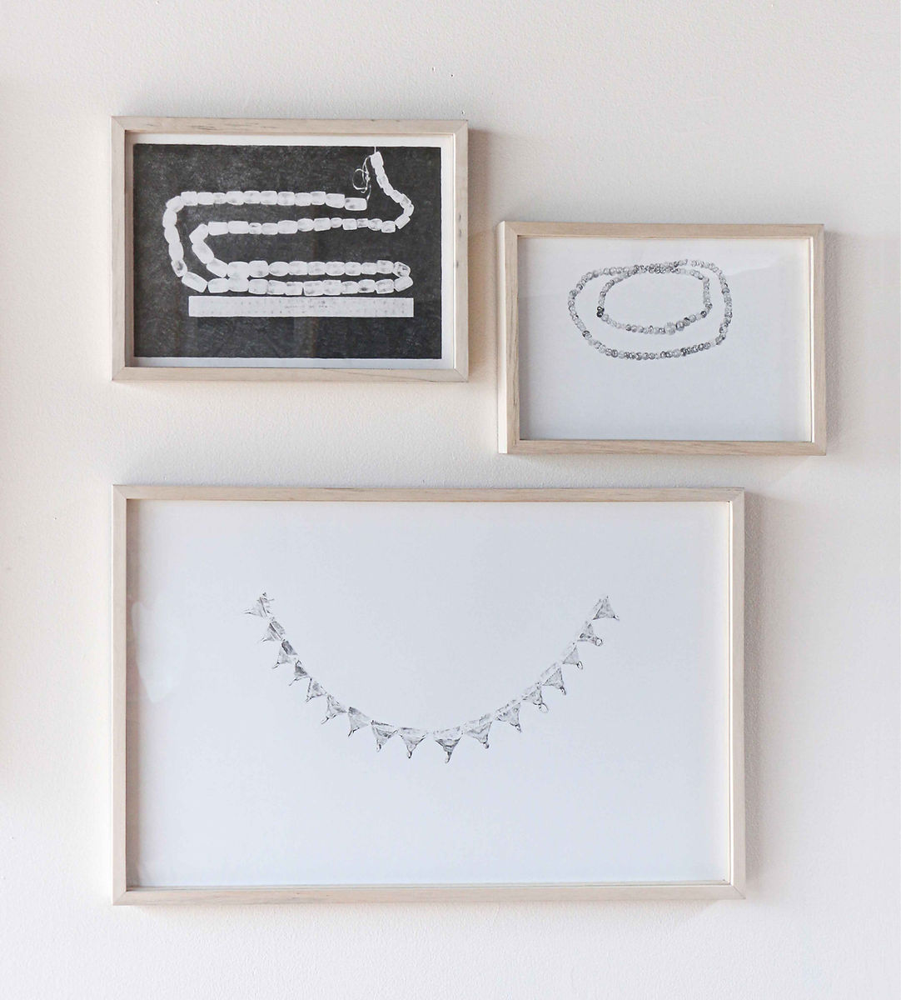

semi preciosas
24 de Agosto - 24 de Septiembre 2023
Plural Nodo Cultural - Bogotá.
“Fragmentos Móviles”
Curaduría de Andrea Infante y Paula Leuro.
Esta exposicion es un ensamble de momentos, encuentros con situaciones y acciones que ocurren a destiempo. Es el resultado de las posibilidades del azar: se articula en torno a un juego de lenguaje y azar. No tiene como eje un tema sino un objeto: un mazo de cartas.
Una estructura con el punto de meta en lo alto revela el rumbo de decisiones de Estefanía. El movimiento de su cuerpo es el inicio para cada idea. La conciencia de su propio eje por el espacio conduce a trazar una ruta por la cual moverse.
Un jardín con animales petrificados: sapos, tortugas y luciernagas en el que Daniel plantea un juego de lectura y narración. El pretexto para crear un ecosistema donde la naturaleza se forma con elementos industriales. Un rosario que cambia su forma para convertirse en un plano, cada misterio contenido, encontrado y guardado por David. Cuatro piezas queconducen la lectura silenciosa de dos elementos.
Un conjunto de piezas suspendidas. El juego de la repetición y suspensión de objetos son una invención que confronta la escala. Las exploraciones arqueológicas, los hallazgos fósiles o reinterpretaciones de estos, el rastro, los negativos o siluetas de objetos son los indicios para aproximarse a la cartografía por la que transita Sofía.
A esta exposición le bastaría encontrar un ojo curioso atraído por una red de coincidencias. Un observador en medio de tanta atenta distracción.

Semipreciosas. Escultura. Yeso, hilos. 200 x 200 x 200 cm. 2023

Semipreciosas. Escultura. Yeso, hilos. 200 x 200 x 200 cm. 2023

Detalle

Mazo de cartas creado para la exposición.

De la serie "Variaciones de un collar". Medidas variables. Lápiz sobre papel 2023.

De la serie "Variaciones de un collar". Medidas variables. Lápiz sobre papel 2023.